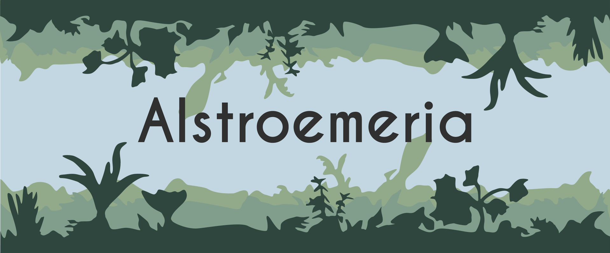

Connect with me on LinkedIn!
Connect with me on LinkedIn!
I'm a recent Computer Science graduate from Fordham University with a passion for expanding my knowledge in technology and development through meaningful work.
Intern
Lincoln Square Business Improvement District (BID) is a 501(c)3 not-for-profit that improves the quality of life in Lincoln Square, a world-famous cosmopolitan area on Manhattan’s Upper West Side, and the cultural and entertainment heart of the City. December 2022-Jan 2023
Security Intern and IT Help Desk Assistant
Jennison Associates , a global investment management company that specializes in a select range of active equity and fixed income investment strategies. June 2024-Aug 2024
Video Game: Alstroemeria| Columbia University| Game Development Club May 2022

Connect with me on LinkedIn!